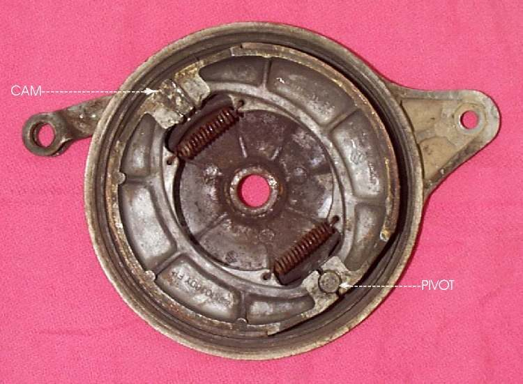
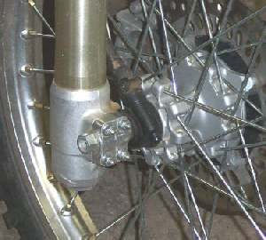

On a drum brake wheel, the hub and drum can sit a little off the shoes after the axle is loose. If the axle is tightened with the shoes off-centre, one part of the shoe drags or they touch only at one side. This short step centres the shoes in the drum before the final tightening.
Safety
- Keep fingers out of the gap between lever and brake arm.
- Support the bike so it cannot fall while the wheel is partly fitted.
- Tighten the axle and any clamps to the torque in your bike's manual. No generic value is given here.
Steps
- Refit the wheel, spacers and brake backing plate as in Remove and refit the front wheel or Remove and refit the rear wheel.
- Fit the axle and the nut or bolt only finger tight. Fit the torque arm or anchor bolt on the rear wheel.
- Spin the wheel. While it is turning, apply the brake firmly and hold it on.
- Keep the brake held on and tighten the axle nut, bolt or clamp to the manual value. For a rear wheel, make sure chain slack and alignment are set first (Check and adjust chain slack).
- Release the brake. Spin the wheel again. It should turn freely.
- Tighten any pinch bolts in the order the manual gives.
Check your work
- The wheel spins freely and stops evenly when the brake is applied.
- No noise or heat from the drum on a short test ride.
If it did not fix the problem
- Brake still drags or is weak: Adjust a drum brake or Service a drum brake.
- The wheel is loose or the hub is hot after riding: Wheel hub or brake drum is very hot after riding.